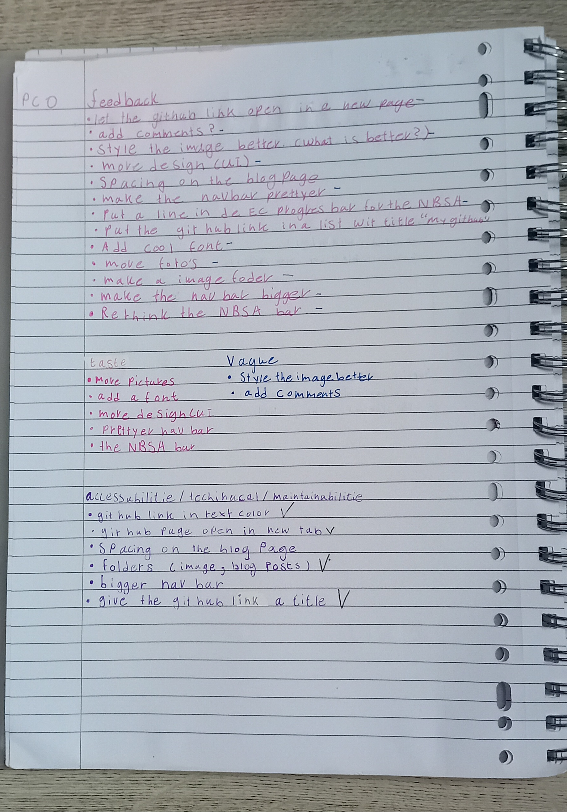
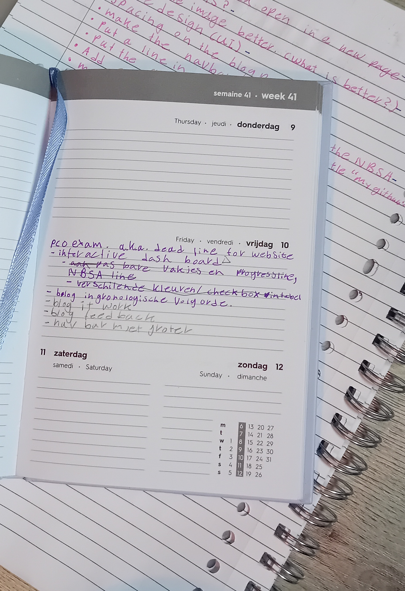

my first feedback
The environment and the method that was chosen to provide us with feedback were frustrating at best, as they relied on me being very proactive. This I find unfair, because it's mandatory to have at least one feedback from the TA and three from co-students. But I'm glad that I stayed, because some people managed to find some errors i missed. I also received feedback on things that I would have ignored otherwise, because they weren't against the requirements, nor did I want to find out how to fix them. I gathered all the feedback, made a list of it, and separated it into three categories: one for taste, one for vague feedback, and one with the highest priority to implement. like you can see down here.
 And also I made a list in my agenda to check off when I'm done with it.(as you can see above)